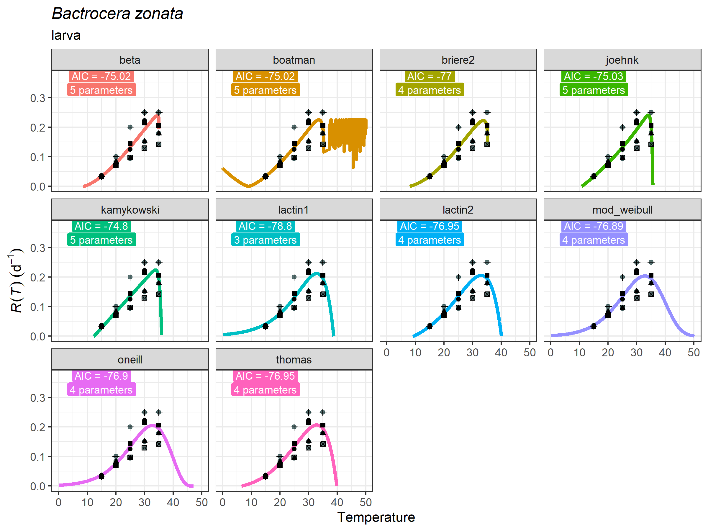
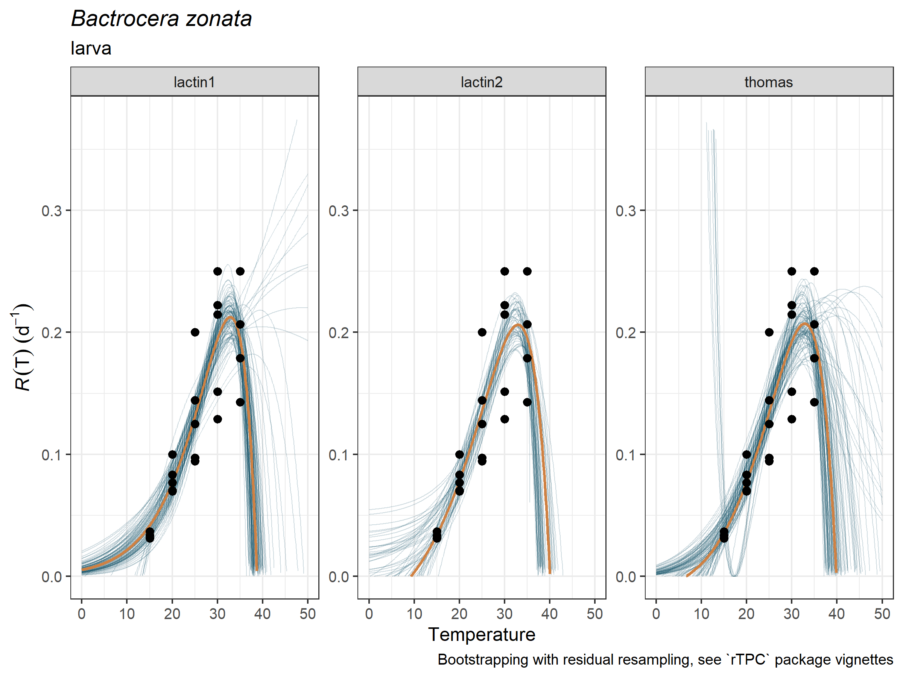
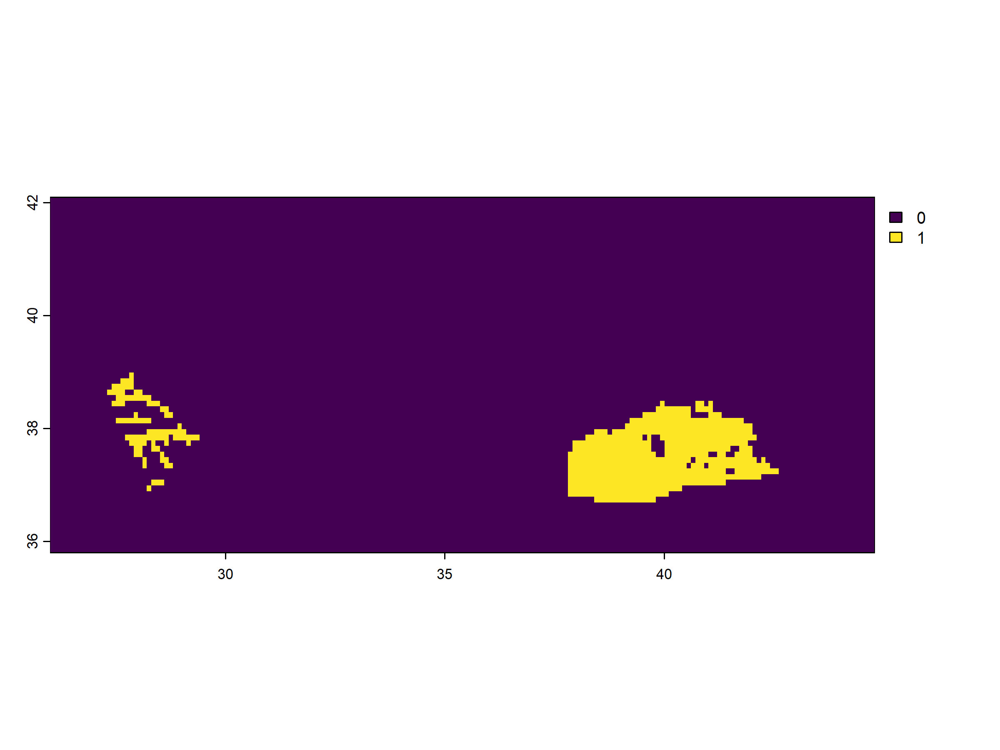
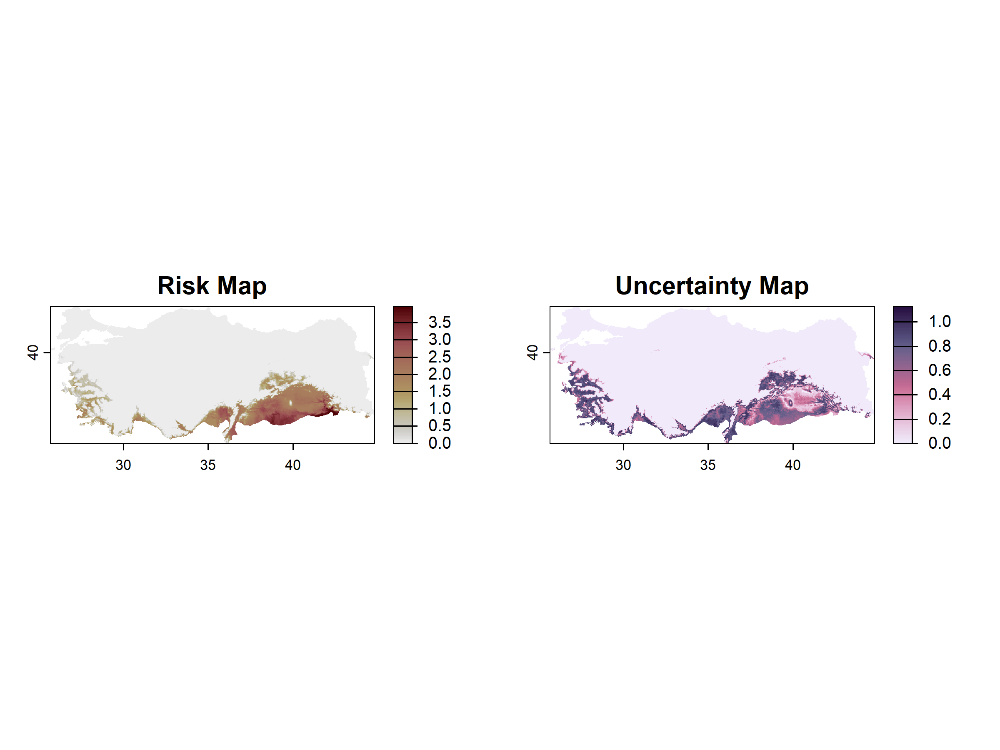
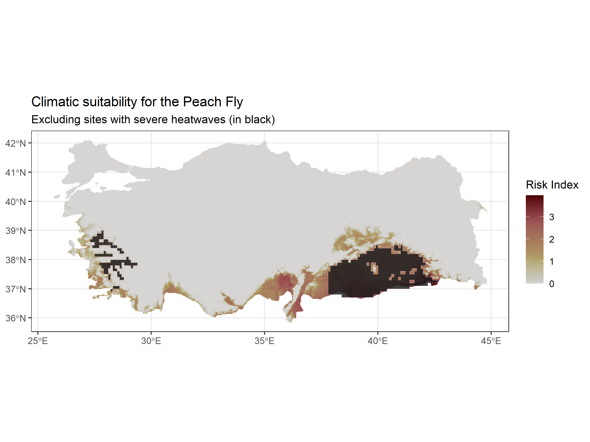
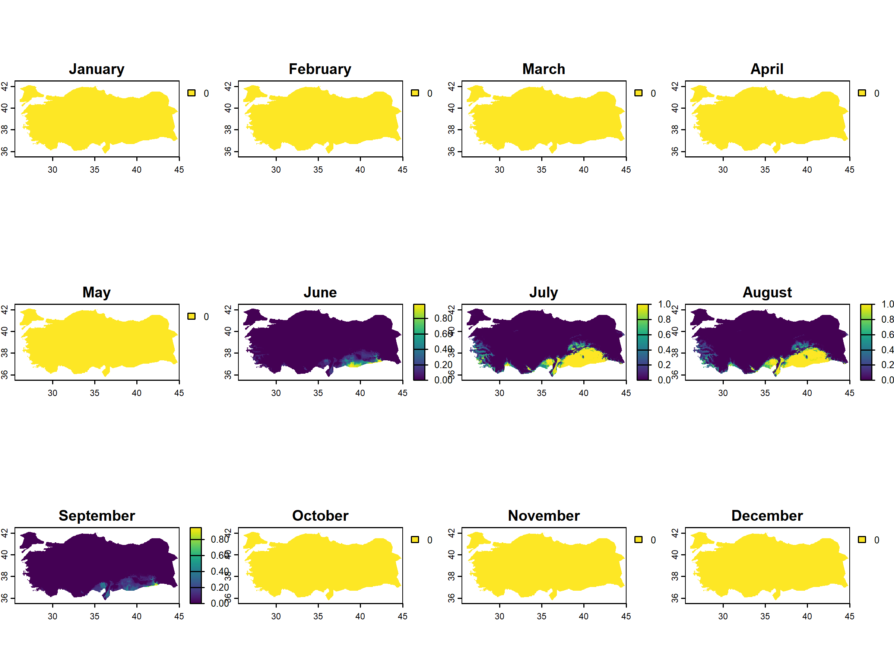
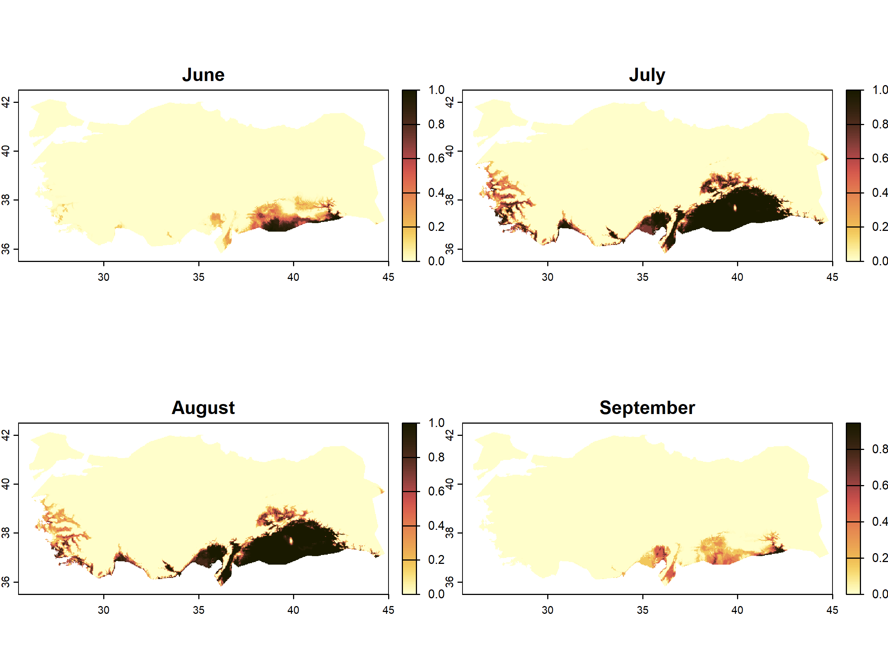
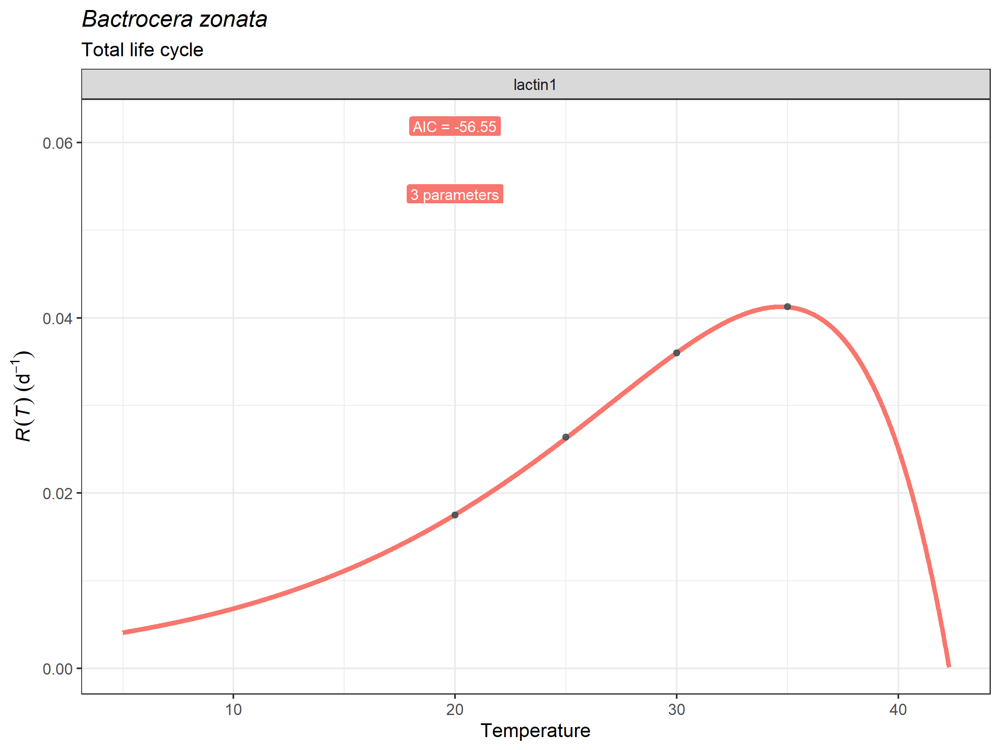
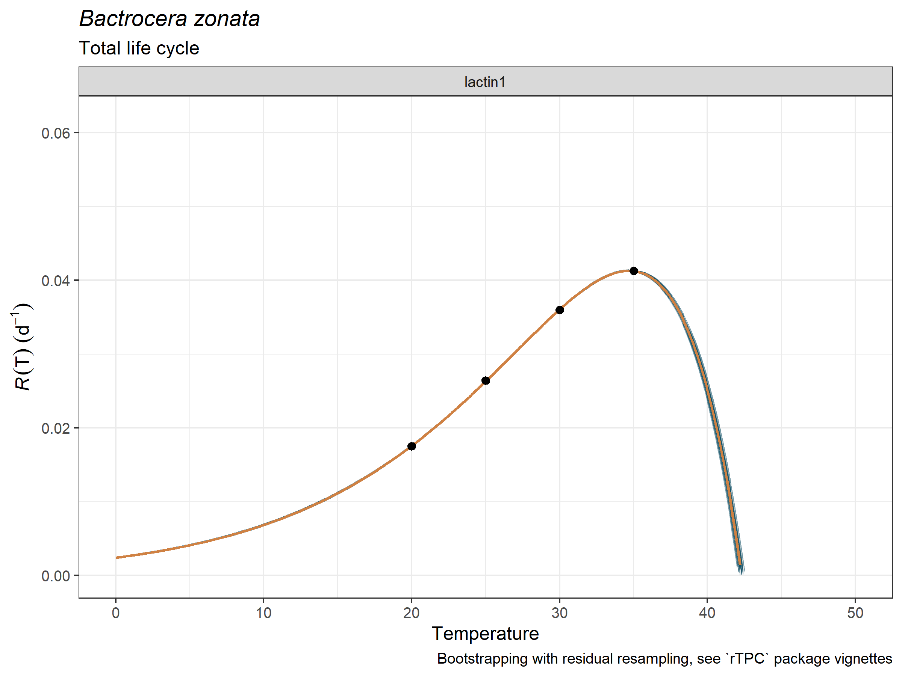
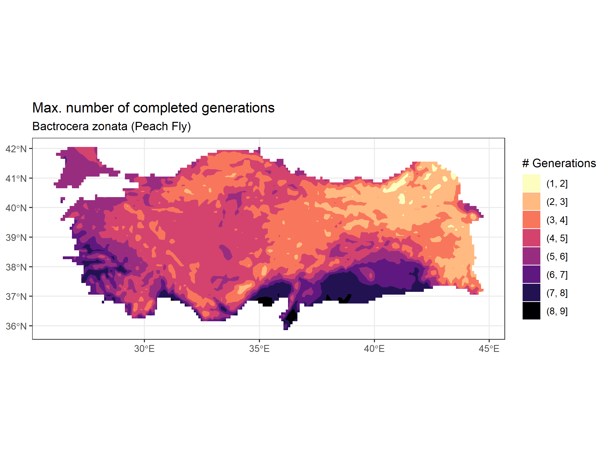

Additional Applications
Source:vignettes/articles/additional_applications.Rmd
additional_applications.RmdIntroduction: three applications
This vignette illustrates three different applications that can be
obtained with the mappestRisk package functions. These
examples include operations that can be done as additional utilities of
the package. They involve more complex forecasting exercises that
require more expertise R user experience, since they are not included as
easy-to-use functions yet. However, these additional applications will
be available either as new functions of the package or as arguments
within the existing ones as soon as possible.
We illustrate how the modelling workflow can be used for three
different applications: (1) Exclude areas from the main pest risk map
(i.e., that obtained through the map_risk() function) at
which the pest will potentially suffer severe heat stress; (2) Use the
thermal suitability boundaries to calculate the thermal suitability in
the months where the affected crop is in its fruiting stage; and (3)
mapping direct rate summation and maximum potential generation number
within a year. In all three cases we use the system Bactrocera
zonata (or Peach Fly) and peach, and all forecasts will be
attempted to Turkey, given the geographic heterogeneity, the
availability of climatic data and the existence of peach growing
regions.
1. Mapping potential exclusion by heat stress
The workflow of mappestRisk is based on thermal
accumulation of average monthly temperatures, similarly to previous
studies (e.g., Shocket et al. (2025);
Taylor et al. (2019); Mordecai et al. (2017)). However, the role of
temperature extremes on species distributions has been largely
documented (e.g., (Kingsolver and Woods 2016;
Vasseur et al. 2014; Buckley and Huey 2016)). By using
appropriate temperature data that captures these climatic extremes at
relevant scales for the organisms, the mappestRisk
functions can address this task.
In this example, we use experimental data on the thermal biology of
the Peach Fly (Bactrocera zonata) for the larval stage from
different studies(Choudhary et al. 2020; Ali
2016; Ullah et al. 2022; Bayoumy et al. 2021; Duyck, Sterlin, and
Quilici 2004; Akel 2015). First, we fit thermal performance
curves (TPCs) using fit_devmodels() and visualize it with
plot_devmodels(). Then, we calculate bootstrapped curves
and visualize them with predict_curves() and
plot_uncertainties(), respectively. These steps follow the
suggested workflow of the core of mappestRisk and leads in
this example to select the lactin2 (Lactin et al. 1995) model.
bactrocera_zonata_larva <- readr::read_delim("thermal_biology_peach_fly.csv") |>
dplyr::filter(life_stage == "larva")
peach_fly_larva_tpcs <- fit_devmodels(
temp = bactrocera_zonata_larva$temperature,
dev_rate = bactrocera_zonata_larva$development_rate,
model_name = "all"
)
plot_devmodels(
temp = bactrocera_zonata_larva$temperature,
dev_rate = bactrocera_zonata_larva$development_rate,
fitted_parameters = peach_fly_larva_tpcs,
species = "Bactrocera zonata",
life_stage = "larva")+
ggplot2::geom_point(data = bactrocera_zonata_larva,
ggplot2::aes(x = temperature,
y = development_rate,
shape = reference))
preds_boots_fly <- predict_curves(
temp = bactrocera_zonata_larva$temperature,
dev_rate = bactrocera_zonata_larva$development_rate,
fitted_parameters = peach_fly_larva_tpcs,
model_name_2boot = c("lactin1", "lactin2","thomas"),
propagate_uncertainty = TRUE,
n_boots_samples = 100)
plot_uncertainties(
temp = bactrocera_zonata_larva$temperature,
dev_rate = bactrocera_zonata_larva$development_rate,
bootstrap_tpcs = preds_boots_fly,
species = "Bactrocera zonata",
life_stage = "larva")
We then define the heat stress exclusion condition
as a biologically meaningful heatwave, i.e., when a site
experiences more than five consecutive days with daily maximum
temperatures above the upper threshold for development estimated for the
pest. For this purpose, we first calculate the thermal suitability
boundaries for thermal tolerance. We do so by setting the argument
suitability_threshold to 0, which results into
the estimated lower (left) and upper (right) thermal limits for
development. While the users can use all the estimates of
tval_right obtained from the bootstrapped curves, here we
use only the median value for simplicity (but not the mean, since some
bootstrapped curves yielded extremely high values, see figure above).
Please, note that this lactin2 model is appropriate in this
example since it yields a biologically realistic shape at the hot-decay
region of the TPC; however, if we were interested in the lower thermal
limit estimate, we should better go with other models with a less convex
behavior at the TPC cold end (see Khelifa et al.
(2019) for discussion).
peach_fly_tol_bounds <- therm_suit_bounds(preds_tbl = preds_boots_fly,
model_name = "lactin2",
suitability_threshold = 0)
upper_thermal_limit <- median(peach_fly_tol_bounds$tval_right)Now that we have a biologically-relevant stressing temperature value, we will use daily climatic data from E-OBS (https://cds.climate.copernicus.eu/datasets/insitu-gridded-observations-europe?tab=overview). Specifically, we will use the 31.0e version for the ensemble mean data set of maximum daily temperatures at 0.1º of spatial resolution for the year 2024.
The following code pipeline masks the E-OBS data set to Turkey vector shape, and then calculates, at each pixel, whether there are six consecutive rows with maximum daily temperatures above the estimated upper thermal limit (or ) of 38.7ºC. In those cases, these cells will be marked as 1’s, or 0’s otherwise.
# 1. Prepare the raster of temperatures for Turkey (2024)
tmax_rast_eobs <- terra::rast("EOBS31_tmax_01_2024.tiff") # <- read the raster
turkey_vect <- rnaturalearth::countries110 |> #ensure CRSs match with `terra::crs()`
terra::vect() |>
tidyterra::filter(NAME_SORT == "Turkey") #obtain a vector for Turkey
turkey_tmax_rast_2024 <- terra::mask(tmax_rast_eobs, turkey_vect)
turkey_tmax_rast_2024 <- terra::crop(turkey_tmax_rast_2024, turkey_vect)
#2. Calculate heatwaves at each pixel
min_consecutive_days <- 6 # <- heatwave defined as >5 days with extremely hot temperatures
is_heatwave <- function(x, threshold, min_consecutive_days) {
# x is the vector of daily temperatures at a given pixel
binary <- as.integer(x > threshold) #obtain 1s and 0s
## now we identify how many 0's and 1's are in a row using rle()
consecutive_1s0s <- rle(binary) # rle summarizes the sequences (e)
any(consecutive_1s0s$values == 1 & consecutive_1s0s$lengths >= min_consecutive_days) #mark with a 1 when the cell has at least than 6 consecutive 1's
}
heatwave_rast <- app(turkey_tmax_rast_2024,
fun = is_heatwave,
threshold = upper_thermal_limit,
min_consecutive_days = min_consecutive_days)
terra::plot(heatwave_rast)
Now we can overlay this raster of cells with severe heatwaves on a
simple forecast obtained from map_risk() function. For this
purpose, we calculate new thermal suitability boundaries with default
values and we obtain a new raster map with default options (i.e.,
monthly temperature data from WorldClim).
peach_fly_suitability_bounds <- therm_suit_bounds(preds_tbl = preds_boots_fly,
model_name = "lactin2",
suitability_threshold = 75)
peach_fly_raster <- map_risk(t_vals = peach_fly_suitability_bounds,
region = "Turkey",
path = tempdir())
map_risk().Then, since the spatial resolution of both rasters (the heat stress and the mean risk) do not coincide, we convert the former to vectorial to obtained a risk map with heat-stress exclusion areas using the tidyterra package:
library(tidyterra)
library(ggplot2)
heatwave_rast[heatwave_rast == 0] <- NA #to avoid plotting NAs when overlaying
heatwave_vect <- terra::as.polygons(heatwave_rast, dissolve = TRUE)
ggplot() +
# base raster: climatic suitability
tidyterra::geom_spatraster(data = peach_fly_raster[[1]]) +
khroma::scale_fill_bilbao(reverse = TRUE, discrete = FALSE, range = c(.1,1),
name = "Risk Index") +
tidyterra::geom_spatvector(data = heatwave_vect,
fill = "gray12", # polygon fill
color = "pink", # polygon border
alpha = .85) +
theme_bw()+
labs(title = "Climatic suitability for the Peach Fly",
subtitle = "Excluding sites with severe heatwaves (in black)")
#> <SpatRaster> resampled to 500580 cells.
2. Thermal Suitability for crop-relevant months
The map output from map_risk() is obtained as the sum of
highly suitable months throughout the year at each pixel. However,
identifying which months are optimal for the pest species and whether
they match those with vulnerable stages of the crop may be more
important in some systems to guide target applications. For example, the
larvae of the peach fly (Bactrocera zonata) emerge and bore
tunnels to feed inside fruiting structures of peach and other crops.
Thus, identifying whether optimal months for development of peach fly
larva match those where peach orchards are in fruiting stages (i.e.,
during the harvest season) can lead to more accurate pest risk
forecasts.
In the following example, we dissect the code underlying the
map_risk() function to generate a map with 12 layers of
thermal suitability, one for each month of the year, using the
bootstrapped TPCs for Bactrocera zonata larvae obtained in the
previous example.
First, we manually extract climatic data from WorldClim using the
geodata package, as map_risk() implicitly
does1.
This outputs a raster with average temperatures at each month:
worldclim_tavg_turkey <- geodata::worldclim_country(country = "Turkey",
var = "tavg",
path = tempdir())
#terra::plot(worldclim_tavg_turkey) # <- we can plot the raster of temperatures
turkey_vect_wc <- terra::vect(terra::ext(worldclim_tavg_turkey),
crs = terra::crs(worldclim_tavg_turkey))
turkey_rast_wc <- terra::mask(worldclim_tavg_turkey, turkey_vect_wc) ## now we
print(turkey_rast_wc)
#> class : SpatRaster
#> size : 840, 2340, 12 (nrow, ncol, nlyr)
#> resolution : 0.008333333, 0.008333333 (x, y)
#> extent : 25.5, 45, 35.5, 42.5 (xmin, xmax, ymin, ymax)
#> coord. ref. : lon/lat WGS 84 (EPSG:4326)
#> source(s) : memory
#> varname : TUR_wc2.1_30s_tavg
#> names : TUR_w~avg_1, TUR_w~avg_2, TUR_w~avg_3, TUR_w~avg_4, TUR_w~avg_5, TUR_w~avg_6, ...
#> min values : -16.6, -17.2, -16.2, -10.9, -6.6, -2.1, ...
#> max values : 14.3, 13.7, 16.3, 21.7, 27.4, 33.3, ...
# the t_rast has 12 layers, one with average temperature for each monthNext, we iterate over each layer (month) of the raster to calculate,
at each pixel, whether the average temperature lie within the range
defined by the thermal suitability boundaries
(peach_fly_suitability_bounds). Since we have an
bootstrapped distribution of these values (with
-simulated
values), we iterate the operations for each simulated set of boundaries.
This results in
-binary
rasters for each month, i.e., with 0’s (at pixels with no suitability)
and 1’s at pixels with suitability (those with temperatures within the
range defined by the set of thermal suitability values at the
-th
iteration). Finally, for each month, we average the value of the
-iterated
binary rasters. This results in a final raster with 12 layers, one for
each month, whose pixels have a value between 0 and 1 representing the
probability of each cell to have highly suitable temperatures for the
pest at that month.
## ADVICE -> this loop may take a while to execute
for(month_i in 1:12){
t_rast_i <- turkey_rast_wc[[month_i]] # <- extract each month layer
t_rast_sims <- terra::rast(turkey_rast_wc,
nlyrs = nrow(peach_fly_suitability_bounds)) #raster with proper dimensions to fill next
for(simulation_i in 1:nrow(peach_fly_suitability_bounds)) { # <- iterate over simulated values
tvals_i <- peach_fly_suitability_bounds[simulation_i, 3:4] # <- obtain the suitability boundaries for the i-th simulation
lgl_rast_peachfly <- t_rast_i >= tvals_i[[1]] & t_rast_i <= tvals_i[[2]] #assign TRUE or FALSE depending on whether tavg values at each cells lie within the range defined by `tvals_i`
int_rast_peachfly <- terra::as.int(lgl_rast_peachfly) # <- convert FALSEs to 0s and TRUEs to 1s
t_rast_sims[[simulation_i]] <- int_rast_peachfly # <- replace with calculated values at the exact position
t_rast_mean_i <- terra::app(t_rast_sims, "mean") # <- calculate the mean across simulations for each month
}
turkey_rast_wc[[month_i]] <- t_rast_mean_i # <- replace the entire layer values with the computed ones
}
#now let's only select cells within turkey
months_peach_suitable <- terra::mask(turkey_rast_wc, turkey_vect)
terra::plot(months_peach_suitable,
main = c("January", "February", "March", "April",
"May", "June", "July", "August", "September",
"October", "November", "December"))
# only august and september have probability of pest risk
months_peach_suitable_positive <- months_peach_suitable[[6:9]]And now we can customize the visualization for the months with identified positive risk:
palette_lajolla <- (khroma::color(palette = "lajolla",
reverse = TRUE))(100)
terra::plot(months_peach_suitable_positive,
col = palette_lajolla,
main = c( "June", "July", "August", "September"))
Thus, this map shows that peach orchards in several regions are very likely to suffer attacks from the peach fly, especially in July and August. This map could also be overlaid by a heat-exclusion map such as in the example above, which would likely result into localized risk at the coastal plains in southern Turkey (e.g., Adana, Mersin, Antalya, Izmir).
3. Thermal suitability based on rate summation
The suggested risk index of the main workflow of the
mappestRisk package (i.e., the ‘number of highly suitable
months a year for development of the pest’) has been previously used for
demographic models of crop pest forecasts (e.g., Taylor2019), and has
been suggested to lead to more accurate predictions than rate summation
(shocket2025). However, mechanistic approaches to mapping pest risk are
typically based on rate summation. This involves incorporating the
biological meaning of the modelled rate in response to temperature to
identify the applied meaning of its accumulation at a site throughout
the year (tonnang2017). For example, voltinism maps are typically based
on linear, degree-day equations fitted to temperature-development data
and consist of spatial projections of the number of generations that a
certain insect pest may undergo based on the thermal requirements
accumulation throughout the year (e.g., efsa—) or the seasonal emergence
of relevant life stages (barker2023). Similarly, this rate summation
approach can be used with nonlinear, TPC models for development to
elaborate voltinism maps (e.g., sampaio2021) or to predict seasonal
occurrence (greiser2023). This is also the case of other suitability
indices based on population growth rate summation, such as the Activity
Index from the Insect Life Cycle Model (ILCyM) software
(khadioli2014).
In the following example, we use experimental data on development rates of the peach fly (Bactrocera zonata) across temperatures. In this case, this data corresponds to the days required to complete a full generation (i.e., egg –> larva –> pupa –> preoviposition adult –> egg). Thus, the accumulation of heat requirements (i.e., the rate summation approach, see liu1995) predicted by a fitted TPC under variable temperatures throughout the year enables to predict the progress of the population as it goes through its life cycle. For instance, if a daily average temperature of 25ºC corresponds to a full life cycle TPC-estimated rate of , that population will have completed during that day a 5% of the required physiological age fulfill its life cycle. One the cumulative rate achieves the 100%, a new generation begins. In this example, we apply this procedure to model rate summation and calculate the potential voltinism of B. zonata based on nonlinear-TPCs.
First, we apply the standard modelling framework of the
mappestRisk package, in this case for the development data
of the total life cycle2.
# 1. Prepare the raster of temperatures for Turkey (2024)
tavg_rast_eobs <- terra::rast("EOBS31_tavg_01_2024.tiff")
turkey_vect <- rnaturalearth::countries110 |> #ensure CRSs match with `terra::crs()`
terra::vect() |>
tidyterra::filter(NAME_SORT == "Turkey") #obtain a vector for Turkey
turkey_tavg_rast_2024 <- terra::mask(tavg_rast_eobs, turkey_vect)
turkey_tavg_rast_2024 <- terra::crop(turkey_tavg_rast_2024, turkey_vect)
## now let's carry out the modelling workflow
bactrocera_zonata_total <- readr::read_delim("thermal_biology_peach_fly.csv") |>
dplyr::filter(life_stage == "total")
peach_fly_total_tpcs <- fit_devmodels(
temp = bactrocera_zonata_total$temperature,
dev_rate = bactrocera_zonata_total$development_rate,
model_name = "all"
)
plot_devmodels(
temp = bactrocera_zonata_total$temperature,
dev_rate = bactrocera_zonata_total$development_rate,
fitted_parameters = peach_fly_total_tpcs,
species = "Bactrocera zonata",
life_stage = "Total life cycle")
preds_boots_fly <- predict_curves(
temp = bactrocera_zonata_total$temperature,
dev_rate = bactrocera_zonata_total$development_rate,
fitted_parameters = peach_fly_total_tpcs,
model_name_2boot = "lactin1",
propagate_uncertainty = TRUE,
n_boots_samples = 100)
plot_uncertainties(
temp = bactrocera_zonata_total$temperature,
dev_rate = bactrocera_zonata_total$development_rate,
bootstrap_tpcs = preds_boots_fly,
species = "Bactrocera zonata",
life_stage = "Total life cycle")
Now, we obtain the fitted and parameterized Lactin-1 model
using the get_fitted_models() from
mappestRisk. Next, we manually apply rate summation
operations across a raster of daily average temperatures of Turkey
obtained from E-OBS (https://cds.climate.copernicus.eu/datasets/insitu-gridded-observations-europe?tab=overview).
Here, we use the 31.0e version for the ensemble mean data set of mean
daily temperatures at 0.1º of spatial resolution for the year 2024. To
predict daily rates, we use the predict() function to
temperature data at each pixel, using the terra function
app():
peach_fly_lactin1 <- mappestRisk::get_fitted_model(peach_fly_total_tpcs, "lactin1") # <- obtain the model object
generations_peach_fly <- app(
turkey_tavg_rast_2024,
fun = function(x) {
if (all(is.na(x))) return(NA)
newdata <- data.frame(temp = x)
preds <- predict(peach_fly_lactin1, newdata = newdata)
preds_positive <- ifelse(preds > 0, preds, 0)
sum(preds_positive, na.rm = TRUE)
})And now we can customize the visualization of the voltinism map based
on TPC models for development rate using the tidyterra
package:
ggplot() +
tidyterra::geom_spatraster_contour_filled(data = generations_peach_fly) +
tidyterra::scale_fill_grass_d(palette = "magma",direction = -1,
name = "# Generations")+
labs(title = "Max. number of completed generations",
subtitle = "Bactrocera zonata (Peach Fly)")+
theme_bw()
This voltinism map can be used in comparison to the risk map provided
by thermal suitability using monthly average temperatures within the
core workflow of mappestRisk. A detailed comparison between
these two methods to predict thermal suitability maps is given in Shocket et al. (2025).